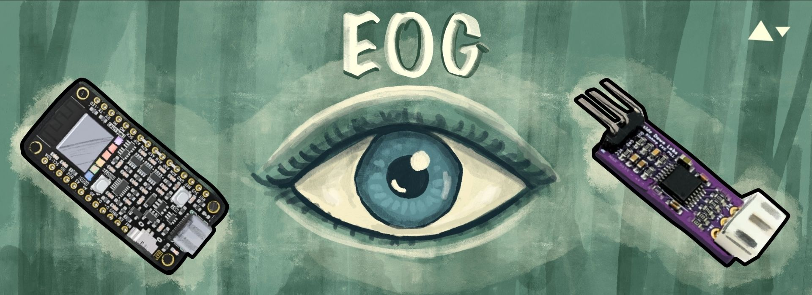
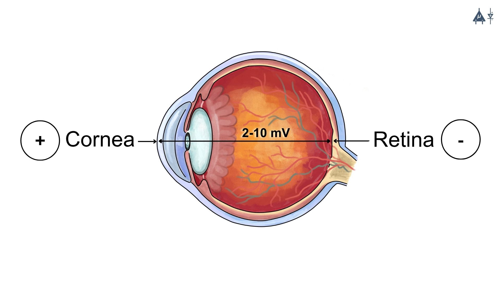
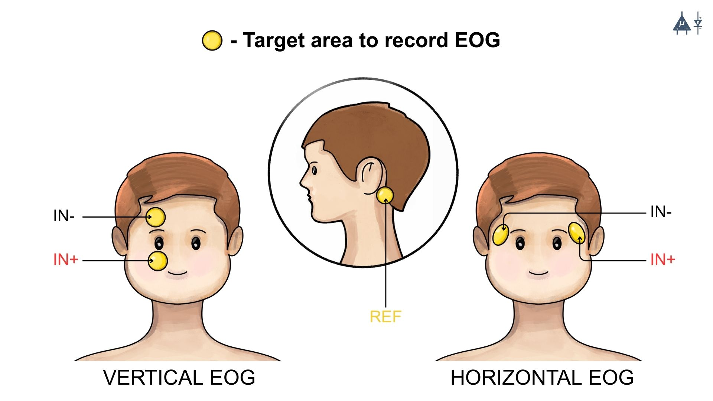
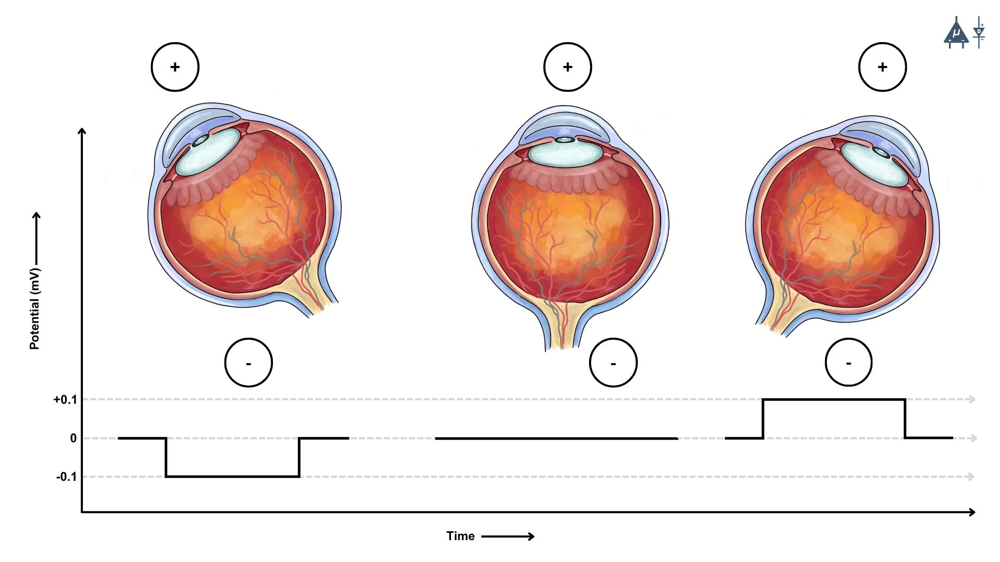
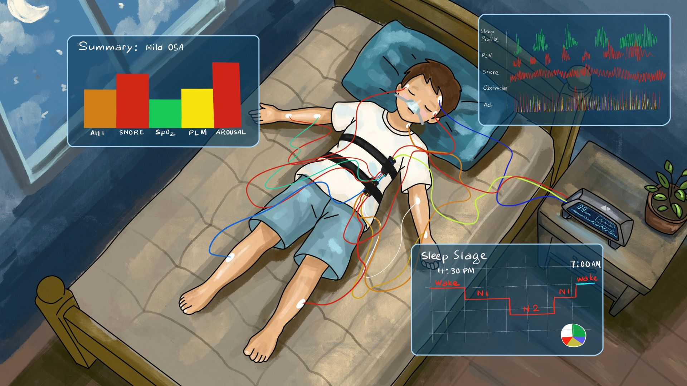
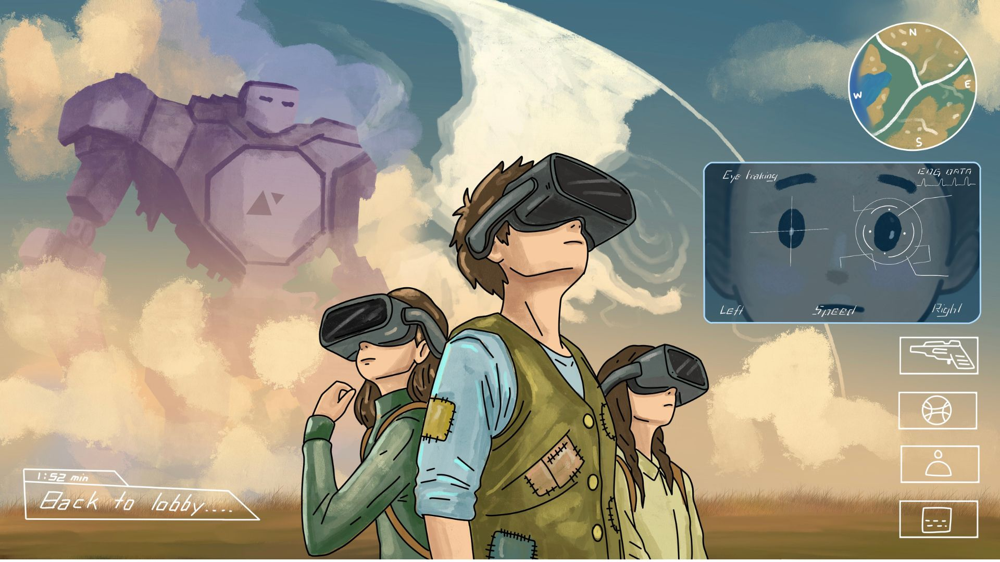
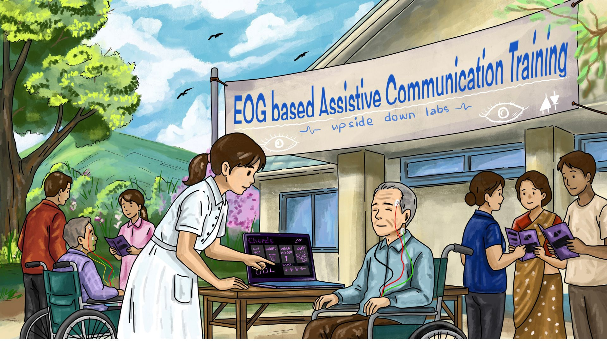

Module 10 : EOG#

Basic Terminology#
Electrooculography (EOG) : Electrooculography (EOG) is a physiological technique used to measure the electrical activity generated by eye movements. The human eye behaves like a small electrical dipole, where the cornea is relatively positive and the retina is relatively negative. When the eyes move, this electrical potential changes in relation to electrodes placed around the eyes. By recording these changes, EOG helps detect and analyze horizontal and vertical eye movements, blinking patterns, and ocular motility. It is widely used in neuroscience, sleep studies, ophthalmology, and cognitive research.
Electrooculograph : An electrooculograph is the instrument or device used to record electrical signals produced by eye movements. It consists of surface electrodes placed around the eyes, an amplifier to strengthen the electrical signals, and a recording system or computer interface that captures and stores the data. The electrooculograph converts small bioelectrical signals from the eye into measurable signals that can be analyzed for research or clinical purposes.
Electrooculogram : An electrooculogram is the graphical recording or output produced by electrooculography. It represents the changes in electrical potential associated with eye movements over time. The electrooculogram typically appears as a waveform or trace on a computer screen or recording system, allowing researchers or clinicians to study patterns of eye movement, and blinking activity.
History of EOG [1]#
1. Early discovery of electrical activity of the eye (19th century)#
The scientific basis of Electrooculography originates from the discovery that the human eye generates a steady electrical potential, known as the corneo-retinal standing potential. During the mid-19th century, physiologists studying bioelectric phenomena observed that the front part of the eye (cornea) is electrically positive, while the posterior part (retina) is relatively negative. Because of this polarity difference, the eye behaves like an electrical dipole.
When the eyeball rotates during eye movements, the orientation of this dipole changes relative to electrodes placed around the eye. This results in measurable changes in electrical potential, which became the fundamental principle behind EOG recording.
These early observations laid the groundwork for later electrophysiological recording techniques.
2. Development of electrophysiological recording methods (early 20th century)#
In the early 1900s, advances in electrophysiology and biomedical instrumentation allowed researchers to detect very small bioelectrical signals generated by tissues. Scientists began placing surface electrodes at the outer canthi of the eyes to measure voltage changes associated with eye movements. These recordings demonstrated that:
Eye movements produce predictable electrical changes
The recorded signal reflects the corneo-retinal potential shift
This method gradually developed into the technique now called Electrooculography(EOG).
3. Establishment of Electrooculography as a clinical technique (1950s–1960s)#
One of the most significant contributions was made by Graham E. Arden and colleagues, who introduced a standardized method to evaluate retinal function using EOG. They developed the Arden ratio, which compares:
Light peak (maximum electrical potential in light conditions)
Dark trough (minimum electrical potential in darkness)
Arden ratio = Light Peak / Dark Trough
A normal Arden ratio is typically greater than 1.8.
This ratio provides information about the function of the retinal pigment epithelium (RPE) and the photoreceptor RPE interaction. Because of this work, EOG became widely used in diagnosing retinal disorders, particularly diseases affecting the retinal pigment epithelium.
4. Expansion of EOG applications in neuroscience and medicine (late 20th century)#
With improvements in signal amplification, electronics, and digital recording, EOG became widely used in several areas:
In clinical ophthalmology EOG is used to evaluate disorders such as
Best vitelliform macular dystrophy
Retinal pigment epithelium dysfunction
Certain hereditary retinal diseases
Sleep research: EOG became an essential component of polysomnography, where it is used to detect rapid eye movements (REM sleep).
In neurology and cognitive research EOG is used to measure
Eye movement patterns
Visual attention
Oculomotor control
5. Modern developments and technological advancements#
Modern EOG systems now use:
Digital amplifiers
Computer-based data acquisition
Signal processing algorithms
These advancements have expanded EOG applications to include:
Human-computer interaction
Assistive communication systems for paralyzed patients
Brain-computer interface technologies
Eye tracking in psychological and cognitive experiments
10.1 Introduction#
Electrooculography (EOG) is a non-invasive electrophysiological technique used to record the electrical activity produced by eye movements. It is most commonly used to assess retinal function, especially the Retinal Pigment Epithelium (RPE).
EOG frequency range : 0.1 to 20 Hz [2]
10.2 Basic principle#
The basic principle of EOG is based on the fact that the human eye acts as an electric dipole where the cornea (front part of the eye) is positively charged and the retina (back part of the eye) is negatively charged. This creates a corneo retinal standing potential whose value ranges from 2mV to 10mV with a typical value of 5-6 mV in humans.

10.3 How it works#
10.3.1 Electrode placement#

Horizontal and vertical EOG#
In EOG, surface electrodes are placed on the skin around the eyes to capture eye movement related electrical activity in the following ways :
Horizontal EOG : Electrodes are positioned at the outer canthi (corners) of both eyes to detect left & right eye movements.
Vertical EOG : Electrodes are placed above and below one eye to detect up & down movements and blinks.
10.3.2 Signal Detection#
The human eye acts as an electrical dipole, with the cornea being positively charged relative to the retina. When the eyes move, the orientation of this dipole changes, producing measurable voltage differences across the electrodes. These voltage changes correspond to eye movements such as saccades, smooth pursuits, and blinks and are recorded as EOG signals.

10.3.3 Signal Amplification and Filtering#
EOG signals are low amplitude bioelectrical signals, typically measured in microvolts to millivolts. Therefore, they are first amplified to make them suitable for digital acquisition. Filtering is then applied to remove unwanted noise such as:
Upside Down Labs Hardware compatible with EOG signal acquisition and processing:
We offer our own open source Chords software suite, featuring tools for signal visualization, data recording (with easy save and download options), time-based plotting, and a host of other benefits-such as analyzing signal frequencies and bandpower.
Calibration of EOG signals
Calibration is required to relate EOG voltage changes to eye movement angles. During calibration, subjects are asked to look at targets positioned at known angles (e.g., ±10° or ±20°). The recorded voltage changes are then mapped to eye movement direction and magnitude. This allows for accurate interpretation of EOG signals in terms of eye position and movement.
10.4.1 Clinical applications#

EOG clinical applications (sleep medicine)#
1. Ophthalmology & Neurology#
2. Sleep medicine [5]#
Used for assessment of sleep disorders (such as narcolepsy, sleep apnea, parasomnias, etc.) by sleep staging as done in polysomnography to observe REM(rapid eye movement) sleep which is associated with dreaming during sleep.
EOG is recorded together with electroencephalography (EEG) and electromyography (EMG) during polysomnography to classify sleep stages (N1, N2, N3, and REM). Characteristic eye movement patterns such as slow rolling eye movements and rapid eye movements help in accurate sleep staging and diagnosis of sleep disorders.
10.4.2 Human-Computer interaction [6]#

EOG applications in human computer interaction (HCI)#
1. Marketing and Advertising#
EOG based eye tracking is used in market research to analyze consumer behavior, such as what parts of advertisements or websites capture attention.
2. Gaze Tracking#
EOG is a part of gaze tracking systems used in HCI to understand where a person is looking on a screen. This technology is used for creating more intuitive user interfaces and for applications in virtual reality (VR), gaming, and interactive media. EOG based interfaces are also used in human-computer interaction research to develop alternative input methods where eye movements act as control signals for navigating menus, typing on virtual keyboards, or interacting with digital systems without using hands.
10.4.3 Assistive technology#

EOG applications in assistive technology#
1. Communication Aids [7]#
EOG is widely used in assistive technology for individuals with severe disabilities (e.g., locked-in syndrome). It allows them to communicate by detecting eye movements to select letters, words, or symbols on a screen.
2. Control Systems [8]#
Eye movements captured by EOG can be integrated into control systems for various devices like wheelchairs or even computers, helping people with mobility impairments.
10.4.4 Driver Monitoring in Vehicles Using Eye-Tracking [9]#
Although most commercial driver monitoring systems rely on camera-based eye tracking, EOG has been explored in research for detecting driver fatigue and drowsiness through eye movement patterns. By analyzing eye movements, the system can identify when a driver is losing concentration or becoming tired. This information can then be integrated into vehicle safety features to provide timely alerts or adjust vehicle controls to enhance safety on the road.
Projects Using EOG#
You can utilize our BioAmp Hardware to create various applications. We’ve successfully developed multiple applications, so there’s nothing holding you back from creating something innovative and outstanding. A few applications of our devices are highlighted below:
10.5 Advantages of EOG#
Non invasive & safe method
High temporal resolution
Can be used when eyelids are partially closed (e.g. during sleep)
Enables hands-free control in assistive and HCI applications
Effective for long term and continuous monitoring
Low cost and simple setup
Works in low light and darkness
Compatible with other physiological recording
10.6 Limitations of EOG#
Limited spatial precision : EOG can determine the direction of eye movement but cannot accurately determine the exact gaze location.
Affected by noise and interference : Signals can be disturbed by facial muscle movements, blinking, or electrical noise from nearby devices.
Signal drift over time : The baseline signal may slowly shift, making long term recordings less reliable.
Electrode discomfort : Electrodes are placed around the eyes, which may feel uncomfortable, especially during long recordings.
Calibration requirement : EOG recordings often require calibration for each subject because signal amplitude varies depending on electrode placement and individual physiological differences.
Skin electrode impedance issues : Signal quality may also be affected by changes in skin-electrode impedance due to sweating, movement, or poor electrode contact.
10.7 Summary#
Electrooculography is a valuable non invasive technique for recording eye movements with high temporal resolution. While it is limited in spatial accuracy, it remains widely used in clinical diagnostics, sleep studies, assistive technologies, and human computer interaction due to its simplicity, safety, and robustness.
Warning
This content is provided solely for educational purposes. Always seek medical advice from a healthcare expert for clinical application.